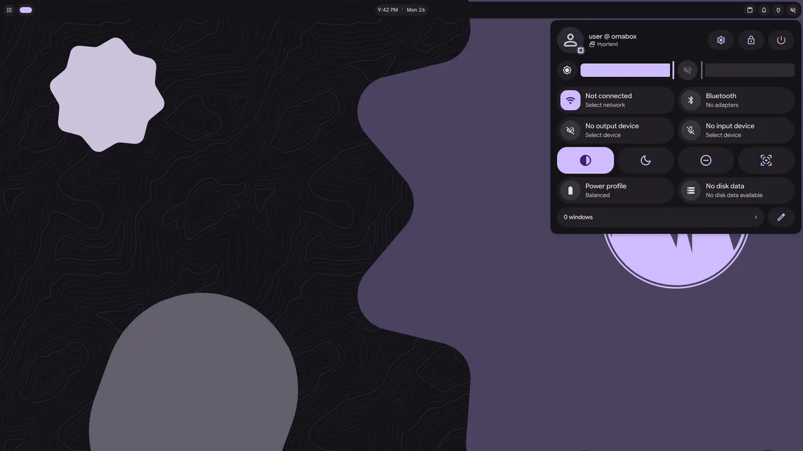

<style>
/* /next: omabox beyond Omarchy. Three promises, each with what has run and what hasn't; the Dux Shell
   shot from a spike. No "what's coming" strip at the end (the build leaves it out here). */
.prom { display: grid; gap: 14px; grid-template-columns: minmax(0, 1fr); }
@media (min-width: 900px) { .prom { grid-template-columns: minmax(0, 1.15fr) minmax(0, 1fr); align-items: start; } }
.prom > div { display: grid; gap: 14px; min-width: 0; }
.num { display: inline-grid; place-items: center; min-width: 26px; height: 26px; padding: 0 7px; border-radius: 7px; border: 1px dashed rgb(125 207 255 / .5); color: var(--sky); font: 600 13px/1 var(--mono); letter-spacing: 0; }
.for { color: var(--ink-2); font-size: 15px; }
.for b { color: var(--ink); font-weight: 600; }
.who { font: 500 11.5px/1.4 var(--mono); letter-spacing: .12em; text-transform: uppercase; color: var(--muted); }
.ran, .yet { border-radius: 16px; padding: 18px 20px; display: grid; gap: 8px; }
.ran { border: 1px solid rgb(158 206 106 / .4); background: rgb(158 206 106 / .05); }
.ran .who { color: var(--box); }
.yet { border: 1px dashed rgb(255 255 255 / .22); background: rgb(255 255 255 / .015); }
.ran p, .yet p { color: var(--ink-2); font-size: 15px; }
.branch { display: grid; gap: 6px; }
.prom figure { margin: 0; }
.prom .ws img { display: block; width: 100%; height: auto; }
.prom figcaption { font: 400 12px/1.5 var(--mono); color: var(--muted); padding: 10px 14px; border-top: 1px solid var(--line); }
#tell .btn { height: auto; min-height: 48px; padding-block: 12px; line-height: 1.3; }
</style>
<main class="wrap">
  <section class="page">
    <div class="head">
      <p class="tag">What's coming</p>
      <h1>omabox <i>beyond Omarchy.</i></h1>
      <p class="lead">omabox was born on Omarchy, and 1.0 runs there. But most of it has nothing to do with Omarchy: the
        boxes, the keys and clicks, the shots, the waits, gdb. Only the config a box boots and the shell it runs are Omarchy's.
        Here is what comes next, what has run so far, and what hasn't. <b>None of it has shipped, and there is no date.</b></p>
    </div>

    <div class="grp" id="plain">
      <p class="tag" style="margin-bottom:14px"><span class="num">1</span>Plain Hyprland boxes</p>
      <h2>A box <i>without Omarchy.</i></h2>
      <p class="lead">A plain box boots its own small Hyprland config: Hyprland's defaults, a terminal on <kbd>SUPER</kbd> +
        <kbd>RETURN</kbd>, no Omarchy look or binds. Every command you'd use to test works the same: <code>keys</code>,
        <code>click</code>, <code>shot</code>, <code>wait</code>, <code>events</code>, <code>lua</code>, <code>gdb</code>,
        <code>--hyprland</code> with your build. Reproduce a plugin's crash or a compositor bug without losing your session.</p>
      <div class="prom">
        <div>
          <p class="for"><b>For</b> Hyprland plugin and compositor developers, and anyone on Hyprland whose agent needs a
            desktop to test in.</p>
          <p class="for"><b>Aimed at</b> any distro with Hyprland 0.56+ and its Lua config. Lua because <code>keys</code>,
            <code>click</code> and <code>monitor</code> work through <code>hyprctl eval</code>, which a <code>.conf</code>
            config refuses.</p>
          <div class="branch"><p class="who">On a branch, not released: the name may change</p>
            <pre class="code"><span class="p">$</span> omabox up --desktop plain</pre></div>
        </div>
        <div>
          <div class="ran"><p class="who">What has run</p>
            <p>A plain box on our Omarchy machine, with Omarchy's files hidden from the box, as if they weren't installed. No
              config errors, and <code>keys</code> opened a terminal.</p></div>
          <div class="yet"><p class="who">Not yet</p>
            <p>A run on a machine without Omarchy; an install that doesn't assume pacman (a <code>doctor</code> that says
              what's missing, per distro); tests in the suite.</p></div>
        </div>
      </div>
    </div>

    <div class="grp" id="shell">
      <p class="tag" style="margin-bottom:14px"><span class="num">2</span>Your own shell</p>
      <h2>The shell you use, <i>in a box.</i></h2>
      <p class="lead"><code>up --shell CMD</code> runs a shell of your choice in place of Omarchy's. Shells will be supported
        one at a time, each checked in a box before it's listed. Dux Shell (formerly DankMaterialShell) is first.</p>
      <div class="prom">
        <div>
          <p class="for"><b>For</b> people who write or use Hyprland shells, and shell plugin authors.</p>
          <figure class="ws"><div class="ws-bar"><span class="dots"><i></i><i></i><i></i></span><span class="t">box · plain Hyprland · Dux Shell 2.0</span></div><figcaption>A spike, not a release: Dux Shell 2.0 in a plain box, its control center open. No system bus, so network and sound read "Not connected" and "No output device", and the shell keeps running.</figcaption></figure>
          <div class="branch"><p class="who">On a branch, not released: the name may change</p>
            <pre class="code"><span class="p">$</span> omabox up --desktop plain --shell CMD</pre></div>
        </div>
        <div>
          <div class="ran"><p class="who">What has run</p>
            <p>Dux Shell 2.0 in a plain box, up to its bar in about 4 s. Its bar, dash, launcher and control center were
              driven with <code>click</code> and its own IPC, and <code>restart-shell</code> brought its bar back. Its
              control center can be read as text (<code>tree</code>). A box has no system bus, so network, Bluetooth and
              sound read "Not connected", "No adapters" and "No output device", and the shell keeps running.</p>
            <p>DankMaterialShell 1.6.3 ran the same way before the rename.</p></div>
          <div class="yet"><p class="who">Not yet</p>
            <p>A second shell. Shells with their own idle and lock need omabox to hold those off.</p></div>
        </div>
      </div>
    </div>

    <div class="grp" id="desk">
      <p class="tag" style="margin-bottom:14px"><span class="num">3</span>Your own Hyprland desktop, in a box</p>
      <h2>Your desktop, your agent, <i>none of it on your session.</i></h2>
      <p class="lead"><code>--desktop desk</code> boots your <code>hyprland.lua</code> in a box: your binds, your input
        settings, your shell, and the look your config and shell give it. What would reach your session is left out:
        <code>systemctl --user</code> and uwsm lines, idle and lock daemons, polkit agents. Everything else runs, and each
        decision is logged. A reload in the box is clean. Your agent tries a change to your desktop in a box first, and you
        look at it there.</p>
      <div class="prom">
        <div>
          <p class="for"><b>For</b> anyone whose agent edits their dotfiles, binds or shell.</p>
          <div class="branch"><p class="who">On a branch, not released: the name may change</p>
            <pre class="code"><span class="p">$</span> omabox up --desktop desk --shell CMD</pre></div>
        </div>
        <div>
          <div class="ran"><p class="who">What has run</p>
            <p>The config Dux Shell 2.0 sets up for a new user (127 binds), booted in a box with Dux as its shell. No config
              errors, and only its two systemd lines were dropped. Its own <kbd>SUPER</kbd> + <kbd>SPACE</kbd> opened Dux's
              Spotlight launcher, and a reload kept every bind with nothing started twice.</p>
            <p>An earlier run on DankMaterialShell 1.6.3 also brought back its wallpaper and light mode, with the box's HOME
              at your real path. That HOME is still a copy, never your real one: the host's <code>~/.ssh</code> and the rest
              were absent.</p></div>
          <div class="yet"><p class="who">Not yet</p>
            <p>A config from a real machine rather than one made in a box; configs that run commands while they load;
              finding the shell from the config; tests in the suite.</p></div>
        </div>
      </div>
    </div>

    <div class="grp" id="same">
      <h2>What stays <i>the same.</i></h2>
      <p class="lead">The same rules hold on every desktop. A box never gets your seat, your secrets or your session, and it is
        not a security boundary. On Omarchy, everything on <a href="omarchy.html">/omarchy</a> stays.</p>
    </div>

    <div class="grp" id="tell">
      <h2>Which shell <i>should come next?</i></h2>
      <p class="lead">Shells will be supported one at a time. Tell us yours, and whether your agents already edit it.</p>
      <div class="ctas" style="margin-top:8px">
        <a class="btn solid" href="https://github.com/diogochaves/omabox/issues/321">omabox #321 · your own desktop</a>
        <a class="btn" href="https://github.com/diogochaves/omabox/issues/247">omabox #247 · plain Hyprland</a>
        <a class="more" href="https://github.com/diogochaves/omabox">Watch the repo →</a>
      </div>
    </div>
  </section>
</main>
